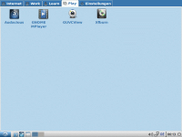
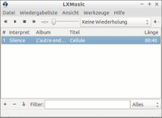
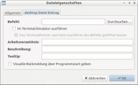
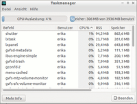
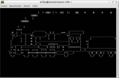
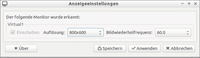

LXDE Programme
Dieser Artikel wurde für die folgenden Ubuntu-Versionen getestet:
Ubuntu 16.04 Xenial Xerus
Zum Verständnis dieses Artikels sind folgende Seiten hilfreich:
Einen Editor öffnen, optional
Ein Terminal öffnen, optional
Root-Rechte, optional
Dies ist eine Auswahl von Anwendungsprogrammen, die aus der Desktop-Umgebung LXDE stammen. Eine vollständige Liste aller Komponenten enthält der Wikipedia-Artikel LXDE.
Lubuntu als Kombination aus Ubuntu und LXDE verwendet z.T. andere Programme.
LXLauncher¶
Zur besseren Darstellung und Bedienbarkeit auf kleineren Displays, z.B. bei Netbooks, kann unter LXDE der Anwendungsstarter LXLauncher  verwendet [1] werden, bei Lubuntu bereits installiert und im Anmeldefenster auswählbar:
verwendet [1] werden, bei Lubuntu bereits installiert und im Anmeldefenster auswählbar:
lxlauncher (universe)
 mit apturl
mit apturl
Paketliste zum Kopieren:
sudo apt-get install lxlauncher
sudo aptitude install lxlauncher
Zum Autostart die Datei ~/.config/autostart/lxlauncher.desktop erstellen und den folgenden Inhalt eintragen [2]:
|  |
| LXLauncher |
[Desktop Entry] Encoding=UTF-8 Name=LXLauncher Comment=Netbook Launcher Exec=lxlauncher Icon=lxlauncher Type=Application Categories=GTK;Utility; NotShowIn=GNOME; NoDisplay=true
Das Aussehen von LXLauncher lässt sich über zwei Konfigurationsdateien verändern:
/etc/xdg/lxlauncher/settings.conf für die Größe der Schaltflächen und Symbole
/etc/xdg/lxlauncher/gtkrc für die Farbgebung der Oberfläche (GTK+)
Möchte man nicht diese beiden systemweiten Konfigurationsdateien bearbeiten, kann man sie dafür auch in einen Ordner im Homeverzeichnis kopieren und die Veränderungen nur benutzerweit vornehmen:
mkdir -p ~/.config/lxlauncher cp /etc/xdg/lxlauncher/* ~/.config/lxlauncher
Lubuntu Netbook startet nicht¶
Auch Lubuntu nutzt seit 12.04 LightDM. Sollte man stattdessen LXDM, der nicht mit dem Leerzeichen in "Lubuntu Netbook" umgehen kann, nachinstalliert haben, bringt folgender Weg eine Lösung [3][4]:
sudo cp /usr/share/xsessions/Lubuntu-Netbook.desktop /usr/share/xsessions/Lubuntu-Netbook2.desktop
Abschließend die Datei /usr/share/xsessions/Lubuntu-Netbook2.desktop bearbeiten [2][4] und in der Zeile Name=Lubuntu Netbook den Titel der Sitzung abändern z.B. nach Name=LubuntuNetbook. Nach einem Neustart kann die Sitzung "LubuntuNetbook" ausgewählt werden (Quelle: Lubuntu Netbook not launching ).
LXMusic¶
|  |
| LXMusic |
LXMusic ist ein minimalistischer und leichtgewichtiger Audioplayer, welcher auf Xmms2 basiert. Die grafische Oberfläche ist intuitiv zu bedienen. Das Programm bietet nur Grundfunktionen zur Wiedergabe von Musikdateien.
LXMusic kann durch das Paket nachinstalliert werden [1]:
lxmusic (universe)
mit apturl
Paketliste zum Kopieren:
sudo apt-get install lxmusic
sudo aptitude install lxmusic
Anschließend ist es unter "LXDE-Menü -> Unterhaltungsmedien -> Music Player" zu finden.
LXShortcut¶
|  |
| LXShortcut |
LXShortcut ist ein kleines Dienstprogramm, welches Anwendungsstarter oder Einträge für den Autostart erstellen kann.
Um das Programm verwenden zu können, muss das folgende Paket installiert [1] werden:
lxshortcut (universe)
mit apturl
Paketliste zum Kopieren:
sudo apt-get install lxshortcut
sudo aptitude install lxshortcut
Bedienung¶
Nachdem man Alt + F2 gedrückt hat, ruft man das Programm mit den gewünschten Parametern auf. Im folgenden Beispiel wird auf der Arbeitsoberfläche die Datei foo.desktop im Homeverzeichnis angelegt. Nach der Eingabe der gewünschten Daten wird über "OK" diese abgespeichert und kann verwendet werden.
lxshortcut -o ~/DESKTOP-ORDNER/foo.desktop
Der Ordnername DESKTOP-ORDNER variiert je nach Ubuntu-Version:
"Schreibtisch" - aktuelle Ubuntu-Versionen
"Arbeitsfläche" - ältere Ubuntu-Versionen
"Desktop" - englischsprachige, nicht eingedeutschte Ubuntu-Versionen
Parameter¶
| LXShortcut | |
| Parameter | Beschreibung |
--help-all | Hilfe |
-o foo.desktop | Datei foo.desktop im Arbeitsverzeichnis erstellen |
-i foo.desktop | Vorhandene Datei foo.desktop im aktuellen Verzeichnis bearbeiten |
Tipp¶
Um den Befehl nicht immer wieder neu eingeben zu müssen, kann eine Verknüpfung erstellt werden:
lxshortcut -o ~/Arbeitsfläche/LXShortcut.desktop # bei einem deutsch lokalisierten (L)Ubuntu lxshortcut -o ~/Desktop/LXShortcut.desktop # bei einem (L)Ubuntu im englischsprachigen Original
Folgende Daten sind einzutragen:
Name:
LXShortcutBefehl:
lxshortcut -i
LXTask¶
|  |
| LXDE-Taskmanager |
Zur Prozess-Steuerung kann ab Ubuntu 10.10 das folgende Paket installiert werden (unter Lubuntu bereits vorinstalliert):
lxtask (universe)
mit apturl
Paketliste zum Kopieren:
sudo apt-get install lxtask
sudo aptitude install lxtask
LXTerminal¶
|  |
| LXTerminal |
LXTerminal ist ein moderner Terminalemulator für die Arbeitsumgebung LXDE. Das Programm ist leicht zu bedienen. Es bietet unter anderem:
Tabs
Schriftartwechsel
Farbauswahl (Vorder/Hintergrund, Transparenz)
Weitere der vielfältigen Optionen sind in der Manpage zum Programm zu finden.
Installation¶
Folgende Pakete müssen installiert [1] werden:
lxterminal (universe)
mit apturl
Paketliste zum Kopieren:
sudo apt-get install lxterminal
sudo aptitude install lxterminal
Nach erfolgreicher Installation ist das Programm unter "LXDE-Menü -> Zubehör -> LXTerminal" zu finden. Unter Ubuntu 12.04 ist auch LXTerminal von 996484 betroffen. Wie man diesen behebt, wird im Artikel zum Xfce-Terminal beschrieben.
|  |
| LXRandR |
 ist ein kleines Werkzeug zum Anpassen des Monitors bzw. der Bildschirmauflösung. Mehr Informationen sind im Artikel
ist ein kleines Werkzeug zum Anpassen des Monitors bzw. der Bildschirmauflösung. Mehr Informationen sind im Artikel 

 - Übersichtsartikel
- Übersichtsartikel- Erstellt mit Inyoka
-
 2004 – 2017 ubuntuusers.de • Einige Rechte vorbehalten
2004 – 2017 ubuntuusers.de • Einige Rechte vorbehalten
Lizenz • Kontakt • Datenschutz • Impressum • Serverstatus -
Serverhousing gespendet von